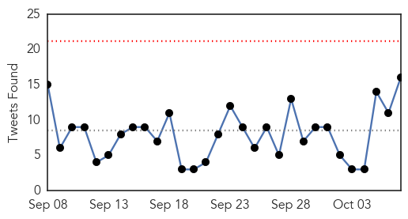
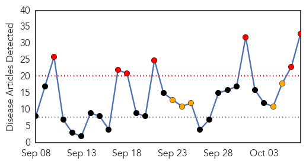
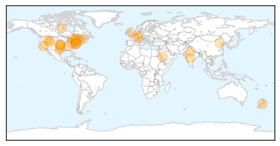

Ebola
30-Day Web Trend
0 alerts, 0 warnings

30-Day Twitter Trend
0 alerts, 0 warnings

Article Locations

Article Confidences

Top Articles:
- 1.000
- WHO hails first full week with no new Ebola cases since March 2014
- 1.000
- The Ebola epidemic might (might) be finally over
- 1.000
- Lecture reflects on legacy of the Ebola crisis
- 1.000
- Dallas Hospital Worker Diagnosed With Ebola, First to Catch Deadly Virus in U.S.
- 0.999
- Travelers Returning from West Africa Tested Negative for Ebola
- 0.999
- WHO hails first full week with no new Ebola cases since March 2014
- 0.992
- Dedicating Emergency Operations Centers in West Africa « Awoko Newspaper
- 0.987
- Family Who Came In Contact With Thomas Eric Duncan Is Being Relocated
- 0.980
- Malaria Deaths Declined, Ebola Threatening its Revival in West Africa
- 0.978
- Lessons Learned From Ebola Epidemic Discussed At San Diego Conference
- 0.975
- VSO Disseminates Research Findings Report of Impact on Ebola
- 0.961
- With the Ebola epidemic nearly over, Paul Farmer has ideas about how to prevent the next one
- 0.949
- Research Shows More Women Died During Ebola
- 0.947
- Haemorrhagic fever kills four in Central Darfur - Sudan
- 0.944
- Tekmira, Biocryst, Sarepta, NewLink, Inovio, NanoViricides Up In Premarket
- 0.941
- Liberia needs 40,000 Doctors
- 0.933
- Politico SL News Medical students call for training opportunities
- 0.910
- China to build 100 hospitals and clinics in Africa
- 0.907
- Chinese, African Health Ministers Affirm Commitment to Cape Town Declaration for Future Cooperation
- 0.905
- China-Africa health forum adopts Cape Town Declaration
- 0.898
- China-Africa health forum adopts Cape Town Declaration
- 0.887
- Ambassadors briefed on Africa’s health policy direction
- 0.854
- Chinese boost to Africa’s health services - Politics
- 0.816
- S/Leone: Ebola devastated maternal health
- 0.790
- Politico SL News China to deploy fourth Ebola vaccine trial in Sierra Leone
- 0.730
- China, Africa agree on building resilient public health system
- 0.719
- Ebola – Weep Not Mother
- 0.719
- ITU's big plans for Sierra Leone
- 0.715
- China, Africa agree on building resilient public health system
- 0.704
- CDC awards Emory $2.2 million grant to prevent spread of infectious diseases
- 0.654
- Ugandan on the “Africa is not Ebola” campaign
- 0.603
- Let's remain alert and refuse to become complacent
- 0.587
- Motsoaledi signs health deal with China
- 0.536
- MOHS Targets 1.5 Million Children
Top Tweets:
- 0.981
- FINALLY!!!!! No confirmed cases of Ebola virus disease (EVD) were reported in the week to 4 October!!!!! ZEROEBOLACASES
- 0.921
- RT: @Inya01 Is Nigeria safe from future Ebola outbreak? OpenMoH EbolaAlert NgHlth
- 0.912
- RT: Dr Disu & Dr Amaka were Nigerian volunteers that supported the Ebola outbreak in Liberia HWForum http://t…
- 0.902
- Current assays detect Ebola virus in semen - Healio http://t.co/4zKVBKCw9Y ebola EVD
- 0.819
- Ebola diaries: Bringing help to those in desperate need - World Health Organization http://t.co/PBK6TnmQJy ebola EVD
- 0.764
- No confirmed Ebola cases were reported in the week to 4 October. First time that a complete epi week has 0 confirmed cases since March 2014
- 0.731
- Baby and maternal deaths soar in Sierra Leone amid Ebola fears – researchers - The Guardian http://t.co/Xwyv5x4SiL ebola EVD
- 0.653
- Ugandan on the “Africa is not Ebola” campaign - New Vision http://t.co/8IQeTV3f9m ebola EVD
- 0.653
- RT: First full epidemiological week in which no new confirmed cases of Ebola were reported since March 2014 https://t…
- 0.642
- RT: SierraLeone reported no confirmed Ebola cases for three consecutive weeks. The last positive case was discharged on 2…
- 0.639
- World Marks First Week of No New Ebola Cases - TIME http://t.co/6qoDzpFPWO ebola EVD
- 0.629
- RT: Infection prevention and control was one of the key ways that volunteers helped to curb Ebola in West Africa. OpenMoH…
- 0.609
- Statement on the 7th meeting of the IHR Emergency Committee regarding the Ebola outbreak in West Africa http://t.co/4C2se4JnNp
- 0.563
- Paul Allen gives another $11M to Ebola epidemic preparedness - Puget Sound Business Journal (Seat... http://t.co/mLAdbJyAXh ebola EVD
- 0.559
- Margaret put others first in Ebola fight - Edinburgh Evening News http://t.co/0jNDDoBh0O ebola EVD
- 0.538
- Lessons Learned From Ebola Epidemic Discussed At San Diego Conference - KPBS http://t.co/dwY7T0FXgX ebola EVD
Influenza
30-Day Web Trend
7 alerts, 5 warnings

30-Day Twitter Trend
0 alerts, 0 warnings

Article Locations
Article Confidences

Top Articles:
- 0.999
- Tips for Traveling During Flu Season
- 0.998
- Possible Mers case in Yala
- 0.998
- FDA Clears the Focus Diagnostics Direct Test to Include New Virus Strains for Flu Season
- 0.998
- Doctors anticipate nasty flu season
- 0.996
- Flu-associated pneumonia tied to skipped flu vaccine
- 0.989
- MyEasternShoreMD: Queen Anne's County News
- 0.986
- Influenza-related pneumonia hospitalizations could be prevented through influenza vaccination
- 0.984
- Flu Vaccine Is Plentiful, And Now Is The Time
- 0.974
- News Scan for Oct 07, 2015
- 0.973
- New flu vaccine being offered in Nova Scotia - Halifax
- 0.972
- Tackling swine flu: States told to file status report by Oct 10
- 0.967
- Hospitals told to prepare for H1N1 patients
- 0.963
- Experts Advise Getting Vaccinated Regardless Of Flu Season Severity « CBS Dallas
- 0.958
- Get flu vaccine now, says Luxembourg's Health Ministry
- 0.944
- 4 Things to Know About Flu Shots and Work
- 0.931
- Editorial: End shot hysteria
- 0.921
- Treasure Coast Urgent Care Gives Tips on the Flu Season 2015
- 0.880
- China’s food safety epidemic continues to thwart health efforts
- 0.869
- Flu research and biological warfare
- 0.869
- Flu vaccines will soon be available at county health departments in Oklahoma
- 0.862
- Today's stories from newspapers in Parry Sound
- 0.848
- Today's stories from newspapers in Belleville Region
- 0.845
- Schabas criticizes flu vaccine program
- 0.816
- Avian influenza could return as fall migration continues
- 0.800
- Today's stories from newspapers in Ottawa
- 0.800
- Today's stories from newspapers in Ottawa
- 0.751
- October 7, 2015 Archives
- 0.751
- October 7, 2015 Archives
- 0.751
- October 6, 2015 Archives
- 0.751
- October 6, 2015 Archives
- 0.676
- H5N2 Strain of Bird Flu Virus Infecting Farms in Canada
- 0.555
- The U.S. Military and the Influenza Pandemic of 1918�1919
- 0.526
- Free flu shots available Friday in Delaware
Top Tweets:
-
No tweets found for Oct 07, 2015